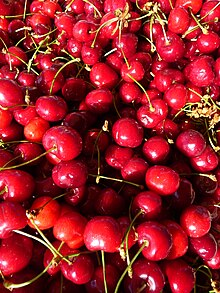

櫻桃
水果中的紅寶石
櫻桃吃起來口感甜中帶微酸、果肉多汁，而且營養豐富，具有較高的維他命A和C，以及鉀質
食用價值
中醫古籍稱它能「滋潤皮膚」、「令人好顏色，美態」，常吃能夠讓皮膚更加光滑潤澤。櫻桃含鐵量相當低。每一百公克櫻桃含鐵量只有 0.2463毫克。
研究結果發現，攝取櫻桃2天，可以降低痛風發作風險35％；攝取櫻桃萃取物則可降低45％痛風風險；若是服用allopurinol藥物又攝取櫻桃時，痛風發作風險則可降低75％之多。櫻桃可能可以藉由增加腎絲球過濾或是降低再吸收，進而降低血清尿酸值；另外，櫻桃和櫻桃萃取物，其實都富含具有抗發炎性質的花青素，對於降低痛風風險也有幫助。

什麼時候吃得到櫻桃？
櫻桃的產季在夏天，不過因產地、季節的關係，台灣一年中會有兩次吃櫻桃的機會，分別能吃到來自北半球和南半球的櫻桃。
夏季櫻桃：產季約在5月～8月，主要來自北美和加拿大，較知名的有美國的加州櫻桃及西北櫻桃。
冬季櫻桃：產季約在12月～1月，產自南半球的紐西蘭、智利和澳洲。
.
資料來源: